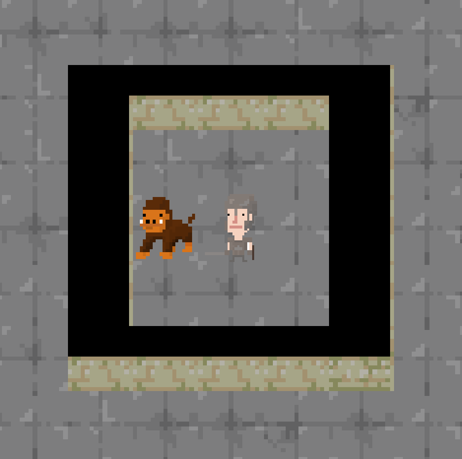

Blind
A 2D role-playing game, made using the Unity game engine and coded in C#. The game is unique in that, rather than giving the user numbers and statistics, it gives written descriptions of health, damage, etc. I have been working on Blind as part of a team comprising of Kevin Xing, Shan Phylim, and myself (with some additional help from Aditya Jayaprakash). Blind is an ongoing project and has taught me a lot about teamwork and project management.